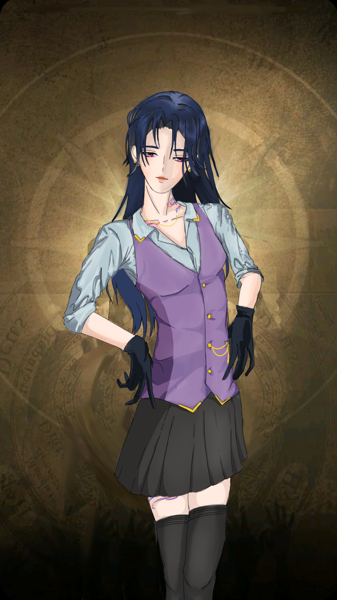

Summary
“Sinostra’s loss or Hotarubi’s liability? One wonders what secrets she smuggled across the border. But with skills like her, perhaps even the shadows wanted her gone.”- Chancellor Cornelius
Itoh Fujino, a second-year student from House Hotarubi, once belonged to the secretive and scandal-prone Sinostra. Though little is said outright, whispers of betrayal and forbidden knowledge linger in her wake.
She’s a figure of calm defiance—too useful to discard, too enigmatic to trust completely. Whether sipping tea with captains or vanishing into Rui’s bar shadows, Itoh is always gathering more than she lets on. Some said her last name "Fujino" is only a decoy, and not her real family name.
Relactionship
- Subaru Kagami: Captain of the current house Itoh is staying in. Periodically share teas and discuss favors of each leaf.
- Haku Kusanagi: Vice-captain of the current house Itoh is staying in. Itohs helps Haku with repairs around the house.
- Romeo S. Lucci: The Vice-captain of the house Itoh used to stay in. Was one of Fico’s loyalists before transferring to Hotarubi. After leaving Sinostra, sometimes run into him at Rui’s bar.
- Tagia Hoshibami: Captain of the house Itoh used to stay in. Did not interact and avoided at all cost.
- Rui Mizuki: Drops by the bar Rui runs once in a while.
- Haru Sagara: Runs into Haru at Rui’s bar; sometime comes over to Jabberwock to meditate.
Appearance
Itoh Fujino’s appearance walks the delicate line between deliberate understatement and ghostly presence. She stands at 163 cm with a frame that seems to drift rather than walk, her weight distributed with a grace that makes her movements appear rehearsed by shadow. Her eyes—gray with a violet tint—rarely blink, and when they do, it feels theatrical.
She favors simple uniforms tailored to immaculate precision, often with an added flourish like a dark silk ribbon. There’s always a faint floral scent clinging to her—subtle, bitter-sweet—like belladonna left to dry in a pressed book. When she smiles, it never quite reaches her eyes—but it always means something.
Personality
Quiet and calculating, Itoh rarely speaks unless she must—and when she does, it’s often more revealing than intended. Known for her haunting composure, she’s perceptive to the point of unsettling. She isn’t unkind, but warmth is never her currency. She honors favors, navigates friction with grace, and can become fiercely loyal to those who earn her regard. Still, most feel that she’s always one layer deeper than she appears.
With a silence that cloaks more than it reveals, Itoh Fujino moves through the world like mist—deliberate, elusive, and never quite where one expects. Her words, rare and carefully chosen, tend to echo long after they’re spoken, laced with observations so precise they border on invasive. There’s a chill to her presence, not from cruelty, but from a refusal to perform affection where it isn’t earned. Favors, once traded, are honored like sacred pacts, and for the fortunate few who breach her defenses, loyalty becomes an unspoken fortress. Yet even then, there’s always the sense that part of Itoh remains submerged—watching, thinking, and perhaps already one step ahead.
Stigma & Abilities
Itoh's Stigma is "Manduclas",project thoughts and emotions directly into another’s mind—but only within close proximity. The ability is eerie in its intimacy and incblackibly effective in tense encounters or stealth missions.
- Note: It’s rumored that she once silenced an argument across a room with a single mental phrase. Whether it’s a gift of empathy or a weapon of coercion depends entirely on how she uses it.
- Pros: spacer
- Cons: spacer
Background
[REDATED]
[REDATED]
Trivia
- Her favorite tea to share with Subaru is osmanthus oolong—a subtly floral blend with hidden depth.
- Though she helps Haku with repairs, she has no mechanical talent; she just likes the quiet company.
- She hums faint, unfamiliar melodies when she's focused—no one's been able to trace the origin.
- Her dorm room is immaculately ordered, but she leaves one drawer intentionally locked and dusty.
- Students from Sinostra refer to her in hushed tones as “The Whisper That Left.”
- Keeps a pressed belladonna flower tucked in her notebook